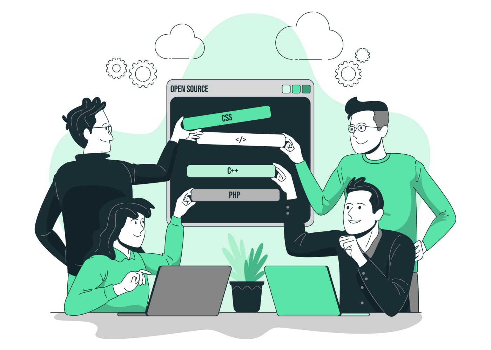

Açık Kaynak Kavramı ve Açık Kaynağa Katkıda Bulunmaya Dair İlk Adımlar
Temmuz 4, 2022
Merhabalar, bir öğrenci ve mühendis adayı olarak açık kaynağa ve açık kaynağa katkıda bulunmaya dair araştırdığım ve edindiğim bilgiler üzerine “Açık kaynak nedir?”, “Neden katkıda bulunmalıyız?”, “Gelişmimize katkısı nedir?” gibi noktalara değinmeye ve kendi adıma yeni yeni adımlarımı atmaya çalıştığım bu süreç içerisinde yardımınızı almak amacıyla bu blog içeriğini hazırlamaya karar verdim.
Hatalarım ve eksiklerim elbette olabilir. Fakat buradaki amacım bilgi, tecrübe ve deneyimi olan kişilerden geri dönüt almak ve bu doğrultu aracılığıyla bakış açımı iyileştirerek verimli bir gelişim süreci geliştirmek. Bu sebeple soru, öneri ve düşüncenizi belirtmekten lütfen çekinmeyin.
Açık Kaynak Nedir?
Açık kaynak yazılım, geliştirilmekte olan veya geliştirilmesi hedeflenen bir iş, amaç, doğrultusunda kullanılmak için oluşturulan yazılımların belirli bir kısmının veya tamamının açık bir biçimde internet ortamında (Github, Gitlab) paylaşılması, diğer kullanıcı ve geliştiricilerin katkılarına, geri dönütlerine açılması durumu diyebiliriz..
Kısaca şu şekilde düşünülebilir. Geliştirilmekte olan veya yeni başlayan bir yazılım içeriğinin herkesin erişimine açılarak doğrudan katkıda bulunabileceği, ücretsiz olarak kullanabileceği bir yazılım felsefesi denebilir.
Bu durum birkaç somut örnek vermek gerekirse;
Nvidia kendi ekran kartlarının çekirdek yazılımlarını Github üzerinde paylaşmaktadır.
Hepimizin yakından bildiği Microsoft’un firmasının birçok yazılımı da
açık kaynak olarak kullanıcılara sunulmaktadır. Ayrıca var olan issue’larıda açıkça inceleyebilirsiniz.

Peki! Açık Kaynağa Neden Katkıda Bulunmalıyım?
Basit cevap ile çünkü sizler bir geliştiricisiniz. Bilgi edinmek, kendinizi ve proje yönetimi hakkında niteliklerinizi geliştirmek gibi birçok sebep için bilgi kaynaklarına, insanlara ulaşabilmelisiniz. Açık kaynağa katkı yapmak sizlere bu becerileri geliştirme, topluluklar içerisinde yer alma fırsatı sağlayabilir. Doğal olarak bir “Network” sağlayacaktır.
Yukarıda kısaca değindiğimiz bu durumları biraz niteliklendirmekte yarar olduğunu düşünüyorum. Çünkü bu noktaların iş hayatının yanı sıra insanın sosyal ve kültürel değerleri için bile çok değerli olabileceğine inanıyorum. İletişim, dünya çapında bir bağ ve haberleşme ile birlikte sadece mühendis gözüyle yaklaşmamalısınız.
Kod ve Proje Analizinde Yetkinlik
Açık kaynak proje geliştirme süreci içerisinde yer almak bir geliştirici olarak sizlere diğer insanların gözünden proje analizi ve kapsamının nasıl
belirlendiğine dair bir bakış açısı sağlar. “Peki bunu nasıl sağlarız?” derseniz.
Açık kaynak yazılım projeleri performanslı, güvenilir, yönetilebilir yazılımlar geliştirme hedefi taşır. Bu hedef doğrultusunda sizden çok daha fazla
tecrübeli geliştiricilerin proje doğrultusunda sunulan kodları değerlendirme biçimini ve verimli algoritma noktasında tercihlerini analiz edebilirsiniz.
Güvenilirlik ve Kullanılabilirlik
Birçok geliştirici herhangi bir yazılım geliştirme safhasında birçok modül, kütüphane, ek araçlar kullanmaktadır. Tespit ettiğiniz bir hatanın
düzeltilmesini veya istediğiniz bir özelliğin gelişimini sağlayabilirsiniz. Çoğu zaman bu kütüphaneler ve araçlar açık kaynak temelinde geliştirilir.
Kısaca açık kaynağa yaptığınız katkılar sizlerin geliştirme ortamınıza dolaylı yoldan yarar sağlayacaktır.
Ayrıca gündelik hayatınızda kullandığınız açık kaynak yazılımların ne kadar güvenilir olduğunu inceleyebilir, hangi verileri kullandığını
öğrenebilir ve bu durumlar için geliştirme sağlayan topluluk içerisinde söz sahibi olabilirsiniz. Örneğin: Linux
Pratik Alışkanlığı
Bu duruma ilk başta araştırma yaparken çok şaşırmıştım. Fakat açık kaynak geliştiricileri genellikle bir topluluk içerisinde yer almasının da etkisiyle
istikrarlı olarak küçük küçük parçalar halinde olsa bile katkı sağlamaya devam ediyor. Aynı mülakatlara hazırlanırken HackerRank, CodeWars gibi
platformlar üzerinde algoritma soruları çözmek gibi düşünebilirsiniz.
Geliştirilen yazılım için diğer geliştiricilerin eklemek istedikleri kodları sürekli olarak analiz ediyor, projeyi yönetiyor, dokümantasyonu ve
kullanımı için kararlar veriyorlar. Bu durum etkin olarak problem çözme becerileri ileri safhalara taşıyor.
Kültürel Öğrenim ve Topluluk İlişkisi
Yazılımlar günümüzde dünyanın dört bir yanında birçok insan tarafından kullanılıyor. Kullanıcılar olduğu gibi dünyanın dört bir yanında geliştiricilerde var ve ortak araçlara ihtiyaç duyuyorlar. Bu durum sizlere Çin’den Amerika’ya birçok farklı kültürden insan ile tanışma ve sizlere farklı külterler hakkında bilgi edinme fırsatı sağlıyor. Hepsinin yanı sıra hem yazılım dili hem konuşma dili noktasında birçok insanın kendisini ilerlettiğini Github üzerinde takip ediyorum.
Sizden Tecrübeli Geliştiriciler İle Vakit Geçirme ve Mentor Edinme Fırsatı
Açık kaynak yazılımları kapsamlı ekipler veya topluluklar tarafından yönetilse bile kesinlikle proje içerisinde nitelikli olarak projenin gidişatını ve
gelişimini denetleyen, temel yapıları inşa eden tecrübe sahibi insanlar olacaktır. Bu durum sizlere bir mentor etkisi yaratabilir. Oradan almış olduğunuz
geri dönüşler ile kendinizi geliştirebilirsiniz.
Bu durum için kendimden örnek vermek istiyorum. İlk defa bir içeriğe katkıda bulunmak istediğimde issue aracılığıyla bir güncelleme iletmek istemiştim.
Fakat bunun doğrultusunda açık kaynak noktasında katkısı olan bana basit bir yol gösterme ile düzenleme biçimini iletmiş hatta bu konu hakkında daha
sonradan uzunca bir açıklama göndermişti. O zamandan sonra görmezden geldiğim bu konu üzerine daha fazla içerik tüketmeye ve okumalar yapmaya başladım.
Kaynakça kısmına bu içeriklerin bir kısmını bırakıyorum. Kendisine de buradan ayrıca tekrardan teşekkür ederim.

Network
Yazmış olduğunuz kodların kalitesi ve analiz yeteneğiniz geliştikçe birçok projenin altına imzanızı ve katkınızı ekleyebilirsiniz. Bu durum olası bir iş değişikliğinde sizlere büyük ölçekte yardımcı olacaktır. Elbette buradaki durum uzun vade için geçerli, ama örnek vermek gerekirse Microsoft Doc içerisinde yer alan dokümanların Markdown dosyalarını Github üzerinde düzenleyebilir ve istek iletebilirsiniz. Kabul edilen istekler katkı sağlayanlar kısmında yer alarak içerik kaldırılmadığı sürece sergilenir.

Motivasyon ve İstek
Bir oluşum içerisinde olmak aktif olarak sizleri etkiler, diğer bakış açılarından fark yaratmak ve yeni kişileri yönlendirmek sizlere motivasyon, ilerleme dayanağı verecektir. Bu netice doğrultusunda çalışma veriminizin artmasını sağlayabilirsiniz.
Kendi Etkinlikleriniz ve Topluluğunuz İçin İnsanlar İle Tanışabilirsiniz
İlerleyen süreç içerisinde geliştirmek istediğiniz bir proje için birçok insanın düşüncesini ve yardımını alabilirsiniz. Yazılım birçok alanı içerisinde barındırmaktadır. Bu bilgi doğrultusunda farklı uzmanlıkları bulunan kişiler sizlere analiz edemediğiniz kısımları görmenizde yardımcı olacaktır. (Belki keyifli bir oyun takımı da çıkabilir.) 😅
Ekip Yönetimi, İletişim
Yazılım alanı içerisinde kapsamlı projeleri yalnız başınıza geliştirmek fazla büyük bir kapsama sahiptir. Sizler her alanda aynı derece yetkinliğe sahip olamazsanız. Yazılım her zaman bir ekip işidir. Bu sebeple bir projede farklı kişiler ile etkin iletişim kurmak, problemi beraber çözme noktasında kendinizi geliştirmek zorundasınız. Bu durum için açık kaynak yazılım geliştirme sizlere yardımcı olacaktır.
- Doğru soruları sorma becerisi
- Uygun dil ile iletişim
- Karşınızdaki de bir insan unutmayın!
- Sabır ve sürekli iletişim

Bu kısımda bahsetmiş olduğum bu maddeleri daha kapsamlı olarak buradaki doküman içerisinde bulabilirsiniz.
Katkı Sağlayabileceğiniz Bir Proje Bulmak
Açıkçası bu madde biraz kendinize zaman tanımanız gereken bir kısım. Kendi adıma henüz yeni yeni başlaşmış olsam bile küçük kod parçacıkları ve dokümantasyon
noktalarında yardımcı olmaya çalışıyorum.
Belirtmem gerekiyor sadece kod ile katkıda bulunmak zorunda değilsiniz. Çoğu zaman daha küçük noktalar gözden kaçabiliyor. Anlaşılabilir, düzenlenebilir bir
readme dosyası veya herhangi bir sunum, etkinlik için bir miktar grafik bile büyük kolaylıklar sağlayabilir.
Bunun için Erhan Yakut ve Uğur Mumcuoğlu’nun bu keyifli muhabbetine bir kulak kabartmanızı öneririm (Açık Kaynak Projeleri Yönetmek ve Katkı Sağlamak
(Erhan Yakut) — YouTube). Bu video içerisinde de yer verilen “good-first-issue” etiketine dair aramalar yapabilirsiniz.
“good-first-issue” geliştiricilerin diğer yeni başlayan veya açık kaynağa giriş amacıyla geliştiriciler için katkıda bulunabileceği nispeten karmaşıklığı
daha az ve başlangıç için uygun problemlerine atadığı etiketlerdir. İssue kısmında bu etikete sahip problemleri inceleyerek işe başlayabilirsiniz.
Açık Kaynak Bir Projeye Katkıda Bulunmak
Yukarıda maddeler ışığında kendinize katkı sağlayabildiğiniz bir proje buldunuz. Şimdi bu katkıyı doğru bir biçimde sağlamak ve basit bir şekilde incelenmesi
için proje sahibine Pull Request (PR) ile iletmeliyiz.
Bu kısıma başlamadan önce burada bulunan Erhan Yakut’a ait içeriği okumanız büyük katkı sağlayacaktır.
Şimdi projemizi bulduk ve issue’lar içerisinde bize uygun bir problem olduğunu varsayalım veya kod içerisinde küçük bir hata gördük.
İlk olarak yapmanız gereken var olan projenin bir kopyasını Github aracılığıyla kendi çalışmalarınız içerisine forklamanız, kopyalamanızdır.
Projenin sayfası içerisinde sağ üstte yer alan menü içerisinden “Fork” kısmına tıklıyoruz.

Çıkan kısımdan “Create Fork” butonuna tıklayarak devam ediyoruz.

Bu aşamadan sonra incelemiş olduğunuz projenin bir kopyası sizin profiliniz altında yer alan “Repository” kısmına kopyalanır. Burada yapacak olduğunuz güncelleme ve değişiklikler sadece sizin çalışmanızı etkiler. Projeyi baz aldığınız “Repository”i etkilemez. Kendi kopyanız üzerinde istediğiniz değişiklikleri gerçekleştirerek, düzenlemeleri sağlayabilirsiniz. Fakat burada belirtmem gereken birkaç madde var.
- Projenin tamamını etkileyen değişiklikler hoş karşılanmaz. Unutmayın karışınızdaki kişi de bir insan ve tüm projeyi baştan sona gözden geçirebilecek zamana sahip olmayabilir. Ayrıca bu topluluk içinde hoş karşılanmaz.
- Olabildiğince küçük, basit ve anlaşılır güncellemeler gerçekleştirin.
- Projeye dair bir katkı şablonu veya şartları varsa bunlara uyun. Örneğin Microsoft katkıda bulunma sırasında sizlerden “Katılımcı Lisans Sözleşmesi ” adını verdiği lisansı kabul etmenizi bekler. Bu durum genellikle büyük çaplı ve tam açık olarak sunulmayan projelerde görülür.
- Katkınızın tek bir amacı olmalı. Birden fazla konuda değişiklik yapmamalısınız. Örneğin “Readme dosyası içeriğinde bulunan hatalar giderildi.” gibi.
- Sabırlı olun, aceleci davranmayın.
- Yapıcı olun. Agresif ve yıkıcı bir tavır hem size hem karşınızdakilere zarar verecektir.
Bütün güncellemerinizi gerçekleştirdikten sonra sizin profiliniz altında yer proje reponuzun içerisine giriniz. Ve sağ üstte yer alan “Contribute” butonuna tıklayarak “Pull Request” isteği oluşturun.

Açılan pencere içerisinde “Pull Request” isteğinizi göndermeden önce uygun bir başlık belirleyin ve yapmış olduğunuz değişikliklere dair kısa, net bir açıklama ekleyin. Bu sayede karşınızdaki kişinin değerlendirmesini hızlandırmış ve kendi düşüncesiniz hızlıca iletmiş olursunuz.

Yapmış olduğunuz isteğin kabul edilmeme ihtimalini olduğunu lütfen unutmayın. Bu şekilde gerçekleşen bir durum için karşınızdaki kişiye uygun bir dil ile sebebini
sorabilirsiniz. Bu sayede sizlerde bilgi edinebilir, kendinizi geliştirebilirsiniz.
Hepsi bir yana “Pull Request” isteğinize dönüş alamadınız. Kendi isteğinizi değerlendirin eğer bir problem olmadığını düşünüyorsanız sabırla bekleyin.
Karşınızdaki kişi meşgul olabilir veya projeyi rafa kaldırmış olabilir. Üzülecek veya sinirlenebilecek bir durum yok. Daha birçok proje sahip olacaksınız.
Elimden geldiğince okuduklarımı sizlere aktarmaya çalıştım. Kullandığım birçok kaynağı aşağıya ekliyorum. Umarım sizlere yardımı olmuştur.
Sağlıcakla kalın…
Kaynakça
- Açık Kaynak Rehberleri | Open Source Guides
- Açık Kaynağa Nasıl Katkıda Bulunulur | Open Source Guides
- Açık Kaynak Projeleri Yönetmek ve Katkı Sağlamak (Erhan Yakut) — YouTube
- Github ile katkı yapmak ve sosyalleşmek — YouTube
- GitHub ile açık kaynak projelere katkıda bulunmak | by Cengizhan Çalışkan | Medium
- What is open source? | Opensource.com
- Open Source Friday | This Friday, invest a few hours contributing to the software you use and love.
- Açık Kaynak Kodlu Yazılım (Open Source Software) Geleceği Yazanlar (turkcell.com.tr)
- torvalds/linux: Linux kernel source tree (github.com)